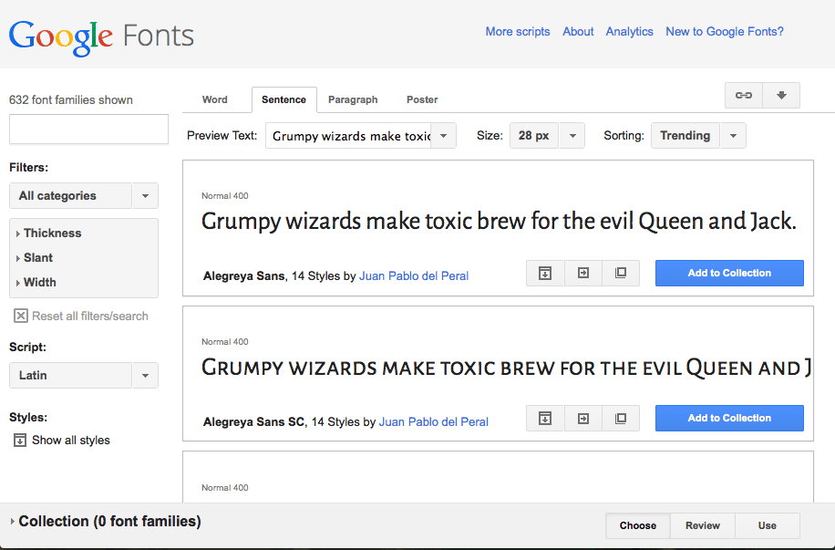

There are a lot of ways to make your web pages look cool using CSS, and in this part of the course I'll explain a few of the simpler ones. You are probably dying to find out how to set different cool looking fonts on your pages, drop shadows, and nice looking backgrounds for your content boxes. We'll look at some of these, and in addition look at simple layout ideas.
Fonts and text
To start with lets look at the CSS for controlling fonts and text. In your JSBin CSS pane, add the following CSS rules at the top:
html {
font-family: arial;
font-size: 10px;
}
h1 {
font-size: 4em;
}
h2 {
font-size: 3em;
}
p {
font-size: 4em;
}If you put a list in your page earlier, you'll also want to give the <li> elements a font-size; you can give them a separate rule, or just let them share the same font size as the paragraphs by replacing p above with p,li.
When this is added, you will notice that the font changes, and the size of the different parts of the text change also. This is because we have specified a different font family for the <html> element, and this is inherited by the body and all of its contents.
The font-size property controls the font size of the text inside an element. The em unit refers to the font size of the element's parent element. The global font size has been set on the <html> element as 10px, so basically in this simple case the em settings are all a multiple of 10. For example, the <h1> element's size has been set as 4em, so it will come out as 4 x 10 = 40px.
What fonts can we use?
The next thing we need to consider is that you can't just use any font you like anywhere you want, just by using font-family in your CSS. A web page making use of a font on a user's computer requires it to be available on that computer (these are the same fonts that other programs will use, like Microsoft Word for example). Just because a font is available on your computer, doesn't mean that is available on the computers of other people looking at your website.
There is another piece of this puzzle we are missing: @font-face. This is a bit of code that allows you to download font files along with web pages, so it doesn't have to be available on the user's computer: it can be downloaded along with the other web page files. Now, implementing this yourself is a bit beyond the scope of this course, so we are going to use a simple online service to do most of the work for us: Google Fonts. Let's do it!
- Open your project in one tab, and Google fonts in another tab
In the Google Fonts page you have a list of fonts, and you can adjust the options
- Look through the list of fonts, and find one that you like the look of, and might to use on your project. Click its Add to collection button.
- When you are done choosing, click the Use button near the bottom of the page.
- Now you are given the code you need to get your font choices onto your page. First of all, you need to made the fonts available on your page, using the line of code seen in step 3 of the Use panel into your page. Copy this line now.
- Paste the line somewhere in between your
<head>and</head>tags. - Now take the line shown in step 4 on the Google Fonts page and put it inside your html ruleset in the CSS pane, replacing the current
font-familyline.
<link href='http://fonts.googleapis.com/css?family=Alegreya+Sans'
rel='stylesheet' type='text/css'>That's about it for fonts in this course! You can find a lot more out at the MDN font page, and Cross browser web fonts part 1.
Extra credit
Try going back to Google Fonts and choosing another font. How do you use two different fonts on a webpage? Try having one font as the base (or sitewide) font, and the other one as a decortive font just for your headings.
It might also look nice if you center your top (<h1>) heading. This isn't done with the margin: 0 auto trick we saw ealrier in the course; it is done with a new property, text-align: center;.
Finally, after you've set new fonts on your page, you may want to fiddle with the font sizes you set earlier, to make them work better (different fonts have a different base size.) Try changing the numbers before the ems to see what you come up with.
Backgrounds
With fonts covered briefly, let's now turn our attention to setting backgrounds in CSS. We've already looked at the simplest part of this: background-color, which allows us to set a single colour to cover the whole of an element's background. Lets now look at a few more of the available options.
Background images
We've already inserted images into our pages with the <img> element; we can also insert background images in our pages using the CSS background-image property, which looks like this:
background-image: url(http://www.location/of/my/image.png);- First, copy the above CSS line, and include it inside the html ruleset we added earlier.
- Let's find an image to use as a background tile for the web site background — in the same way as we did earlier, go to Google Images. Search for "background tiles" and choose a repeating pattern that you like the look of. When you've found this, grab its web address in the same was as we did before (click the image, then click View image > copy the web address from the address bar.)
- Now you've got the web address, go back to the JSBin CSS pane and replace
http://www.location/of/my/image.pngwith your image's web address.
Background gradients
CSS can also generate background gradients for you. A CSS gradient is a custom background image generated by a function that replaces the url( ... ) function we used earlier. There are radial gradients, but for now we'll just look at linear gradients, which are easier to understand.
- First of all, delete the
url()value from thebackground-imagedeclaration you just placed into your html rule. - Replace it with the following function:
linear-gradient(to right, red, green) - Try experimenting with these values:
- The first value is direction the gradient is traveling. Try replacing
rightwithup,down,top leftorbottom right. - The second value is the colour of the gradient at its beginning. Try changing this to a different colour.
- The third value is the colour of the gradient at its end. Try changing this as well.
- The first value is direction the gradient is traveling. Try replacing
CSS layouts
so far we've really just looked at changing simple things on your web page, such as colours and fonts. But CSS can do a lot more - you can use it to change the position of elements on the page, giving it completely new layouts.
In this case we'll just do something really simple - we'll take our two divs and make them sit side by side instead of on top of each other - this is called a two column layout.
To start with, we are going to float our divs to the left and right of one another. To do this, we need to apply float: left; to one of them, and float: right; to the other one; we also need to give each one a width small enough so that both boxes fit on the same line across. I changed my values to the following:
.intro {
background-color: green;
padding: 20px;
margin-bottom: 20px;
border: 5px solid black;
float: left;
width: 39%;
}
.gallery {
background-color: red;
padding: 20px;
border: 5px solid black;
float: right;
width: 45%;
}Remember that the full width includes the padding and margin and border of the elements too. I deliberately made the .intro width 1% smaller than needed, so it would leave a gutter between the two.
Extra credit: Drop shadows
CSS provides a mechanism to put drop shadows on your text and boxes, which can create some fun effects.
text-shadow: This allows you to put a funky drop shadow on the text of an element, for example an <h1> — text-shadow: 2px 2px 5px black;. The four items in the value are:
- The horizontal offset of the shadow from the original text (how far it moves over to the right.)
- The vertical offset of the shadow from the original text (how far it moves toward the bottom.)
- The blur radius of the shadow. This means how blurry it is; a bigger number will give more blur, while 1px will give a solid shadow (no blur.)
- The base colour of the shadow.
box-shadow: This allows you to put a funky drop shadow on a whole element, such as a <div> — box-shadow: 2px 2px 5px black;. The four items in the value are:
- The horizontal offset of the shadow from the original box (how far it moves over to the right.)
- The vertical offset of the shadow from the original box (how far it moves toward the bottom.)
- The blur radius of the shadow. This means how blurry it is; a bigger number will give more blur, while 1px will give a solid shadow (no blur.)
- The base colour of the shadow.
Try adding some drop shadows to your web page, and see what you can come up with.